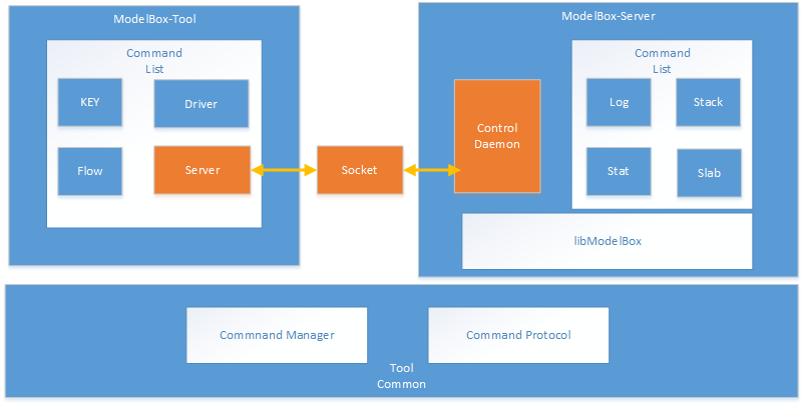

ModelBox Tool
ModelBox Tool是ModelBox套件集成的一个开发、维护工具，提供了开发、维护的常用命令, 可用于开发调试。
在功能上，ModelBox Tool包含了如下功能
| 功能 | 功能说明 |
|---|---|
| help | 显示帮助信息 |
| driver | 查看Driver列表及其功能 |
| flow | 快速运行一个流程，快速验证 |
| key | 密码加解密，模型加解密 |
| server | 查看Log，Stack，Slab和Statistics信息 |
| develop | 创建开发编排环境 |
ModelBox为标准的命令行工具，可以使用modelbox-tool -h查看详细的帮助说明。
help功能
用于显示ModelBox各命令组帮助信息
查询各命令组帮助信息
modelbox-tool help driver modelbox-tool help flow modelbox-tool help key modelbox-tool help server modelbox-tool help develop modelbox-tool help template
driver功能
用于查询ModelBox Driver相关的信息。
此命令组为modelbox-tool driver，格式如下：
modelbox-tool driver [-type flowunit] [-path dir1,dir2] [-details [-name name]] [-conf path/to/graph.conf]
-path为添加扫描路径，不携带时默认扫描系统目录，携带时，扫描系统目录和新增目录。
-name 为过滤参数，不携带时默认列出所有扫描到的结果，可以输入功能单元名称进行过滤，也可以输入cpu、cuda、ascend进行设备类型过滤。
查询列表
在开发过程中，可能需要查询图中需要的插件的列表，这时ModelBox Tool可以用于查询当前图的情况。
常用命令如下：
查询当前系统中已经安装可用的driver：
modelbox-tool driver -info查询当前系统中已经安装可用的flowunit列表：
modelbox-tool driver -info -type flowunit查询系统路径和指定图文件的flowunit列表
modelbox-tool driver -info -type flowunit -conf [path/to/graph.conf]查询系统路径和指定路径使用的flowunit
modelbox-tool driver -info -type flowunit -path [path/to/flowunits]查询单个flowunit的详细信息
modelbox-tool driver -info -type flowunit -details -name [FlowunitName] -path [path/to/flowunit]
查询详细信息
如需要查询具体功能单元的功能说明，输入，输出名称和选项设置，可以用ModelBox Tool查询详细参数。
常用命令如下：
查询当前系统中driver的详细信息：
modelbox-tool driver -info -details -name [name]查询当前系统中所有功能单元的详细信息：
modelbox-tool driver -info -type flowunit -details -name cuda查询指定名称的功能单元详细信息
modelbox-tool driver -info -type flowunit -details -name [name] -path [path/to/flowunit]
Flow功能
流程图相关的功能，用于测试，验证图是否配置正确。
此命令组为modelbox-tool flow
运行调测流程图
在开发过程中，可能需要临时调试图以及对应的功能单元，这时，可以使用modelbox-tool flow命令组的命令。
执行图
modelbox-tool flow -run [path/to/graph.toml]
工具执行后的运行日志，存储在/var/log/modelbox/modelbox-tool.log中。如果需要修改日志级别，或将日志输出到屏幕上，可参考后续章节的内容。
template功能
创建代码模板，用于开发准备。可以使用modelbox-tool template命令组,格式如下：
modelbox-tool template [options]
创建工程模板
modelbox-tool template -project -name [name]创建C++功能单元模板
modelbox-tool template -flowunit -lang c++ -name [name] -input name=[port_name],device=[cpu/cuda/ascend/...] -output name=[port_name],device=[cpu/cuda/ascend/...]创建Python功能单元模板
modelbox-tool template -flowunit -lang python -name [name] -input name=[port_name],device=[cpu/cuda/ascend/...] -output name=[port_name],device=[cpu/cuda/ascend/...]创建推理功能单元模板
modelbox-tool template -flowunit -lang infer -name [name] --virtual-type [tensorflow/tensorrt/torch/acl/mindspore] -model [model_path] -copy-model -input name=[port_name],device=[cpu/cuda/ascend/...] -output name=[port_name],device=[cpu/cuda/ascend/...]创建YOLO功能单元模板
modelbox-tool template -flowunit -lang yolo -name [name] -virtual-type yolov3_postprocess -input name=[port_name],device=[cpu/cuda/ascend/...] -output name=[port_name],device=[cpu/cuda/ascend/...]创建服务插件模板
modelbox-tool template -service-plugin -name [name]
通常情况下，先创建工程模板，再在工程对应目录创建功能单元或者服务插件。
Key功能
key功能包括了模型加解密，密码加密等功能。
此命令组为modelbox-tool key
密码加密
某些情况，需要对存储在本地文件，或图中的密码等敏感信息，加密。
键盘输入密码：
modelbox-tool key -pass标准输入输入密码：
modelbox-tool key -pass < pass_filemodelbox-tool key -pass <<EOF pass EOF环境变量输入密码加密
MODELBOX_PASSWORD="pass" modelbox-tool key -pass
注意
- 默认情况下，加密的密码和设备绑定，若需要和设备无关，则需要增加
-n参数。 - 密码安全性上，键盘输入最可靠，其次是标准输入，环境变量形式不推荐。
- 编程接口，可以使用popen执行命令，然后write密码到管道中。
模型加密
如需要对模型文件进行加密，则可以使用modelbox-tool key -model命令组对模型文件进行加密。
- 对指定模型文件进行加密
modelbox-tool key -model [path/to/model]
执行后，输入密码，工具加密后，会输出加密文件，以及加密密钥。
注意：
- 默认情况下，加密的密码和设备绑定，若需要和设备无关，则需要增加
-n参数。 - 模型安全性上，并不能确保模型文件100%不被获取到明文，为保证模型的安全性，应该从系统角度考虑安全性。具体可参考推理功能单元的说明。
Server功能
查看Log，Stack，Slab和Statistics信息。
此命令组为modelbox-tool server

server功能需要进行配置
Log
动态设置日志级别
此命令组为modelbox-tool server log, 命令格式如下：
modelbox-tool server log --setlevel [level]
modelbox-tool server log --getlevel
Stack
查看modelbox线程栈信息
此命令组为modelbox-tool server stack
Slab
查看内存碎片
此命令组为modelbox-tool server slab, 命令格式如下：
modelbox-tool server slab
modelbox-tool server slab --device --type [cuda/cpu] --id [id]
Statistics
查看统计信息
此命令组为modelbox-tool server stat, 命令格式如下：
modelbox-tool server stat --all
modelbox-tool server stat --node [name]
Develop
创建开发运行环境，用于启动ModelBox编排UI，连接UI进行工程创建。此命令组为modelbox-tool develop, 命令格式如下：
modelbox-tool develop -s
modelbox-tool develop -q
具体参数说明如下：
| 参数 | 功能说明 |
|---|---|
| -s | 在$HOME/modelbox目录下创建开发环境，并启动支持编排的服务。 |
| -q | 查询对应开发环境的状态和信息。 |
| --home | 指定开发环境服务的路径，默认情况为$HOME/modelbox |
ModelBox Tool主配置
ModelBox Tool可以支持修改日志级别，输出形式，和日志文件路径，在执行命令时，可以通过如下参数修改
modelbox tool main options:
-verbose output log to screen.
-log-level log level: DEBUG, INFO, NOTICE, WARN, ERROR, FATAL.
-log-path log file: default : /var/log/modelbox/modelbox-tool.log
注意，使用时，上述参数需要紧接modelbox-tool命令后，不能放到子命令组阶段，如
modelbox-tool -verbose [-log-level DEBUG] [-log-path filepath] flow -run [/path/to/graph.toml]
具体参数说明如下：
| 参数 | 功能说明 |
|---|---|
| -verbose | 是否将日志输出到屏幕 |
| -log-level | 输出日志级别，可以为debug, info, notice, warn, error, fatal |
| -log-path | 输出日志文件，默认为/var/log/modelbox/modelbox-tool.log |